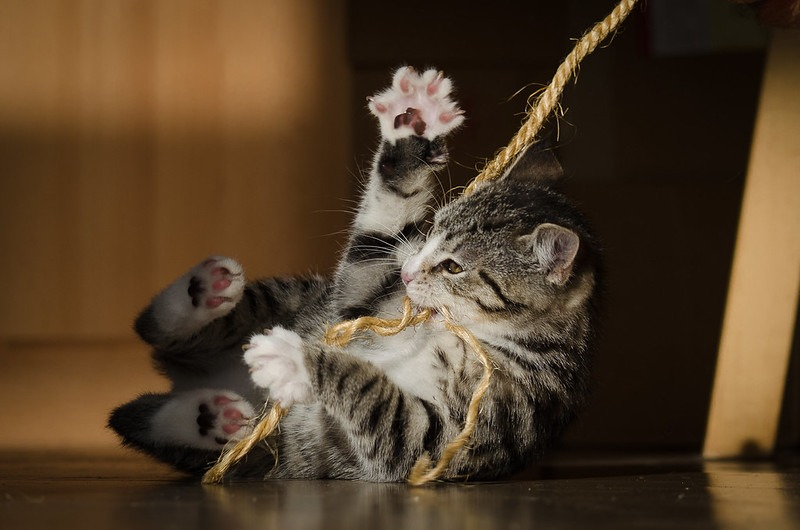

Playing with your pet can be very entertaining – for you and them both - but the benefits of playtime go well beyond just the fun factor. It’s a great way to bond with your pet as well as beneficial for their health and over all well-being. If you own a pet and want to make sure they remain healthy and happy, you must take out time for regular play sessions with your furry companion.
Here are some reasons why playing with your pet is important:
All pets, whether large or small, need to maintain a healthy weight to remain physically well and strong. Pets such as dogs and cats especially, need regular exercise and activity to stop them from getting lazy and obese. Routine exercise will also ensure that your pet stays safe from chronic diseases and other health problems that can arise because of being overweight and unfit. To keep them in shape, have regular playtime sessions with them where you can let them run around chasing a frisbee or going for a neighborhood walk with you. You can invest in feathery toys for your cat to chase around the house, a little play gym, or pet playground for your smaller pets.
Pets such as dogs and cats that don’t get enough time to play around and exercise are most likely to show destructive behavior. Because of not having adequate outlets to release their pent-up energy they can resort to behaving poorly and not following rules that you have set up for them. Find ways to play with them where they can release all that energy so they don’t need to express their frustration through destructive behavior.
Playtime is a great way for your pet to release any anxiety or stress they may be dealing with. Whether they are new to your home or have been your companion for years, it is natural for them to have moods and mental anxiety as well. By playing around with them, you will be able to help them release that stress and lift their mood while improving their overall mental wellbeing.
Playtime can also help your furry companion get your undivided attention, which is something all pets crave. Not getting enough one-on-one time or interaction with you can lead to your pet behaving in an unruly manner to catch your attention. By taking out some exclusive time to play and exercise with your pet, you will be able to strengthen your bond with them as well as further build their trust.